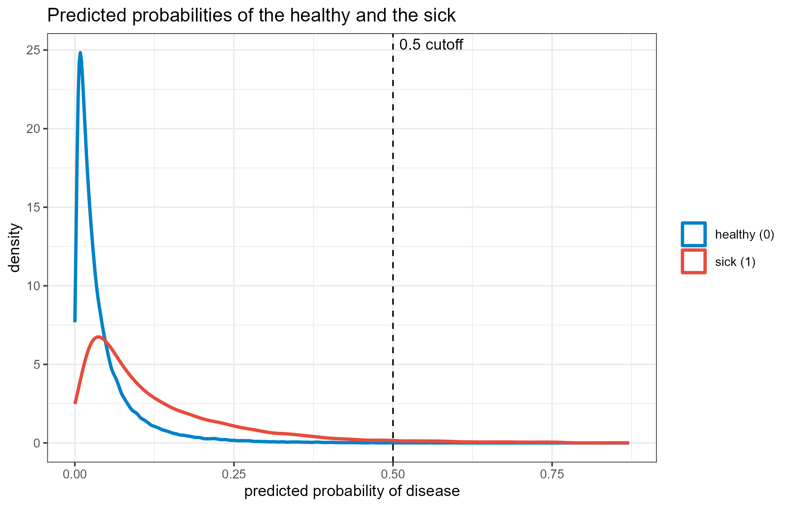
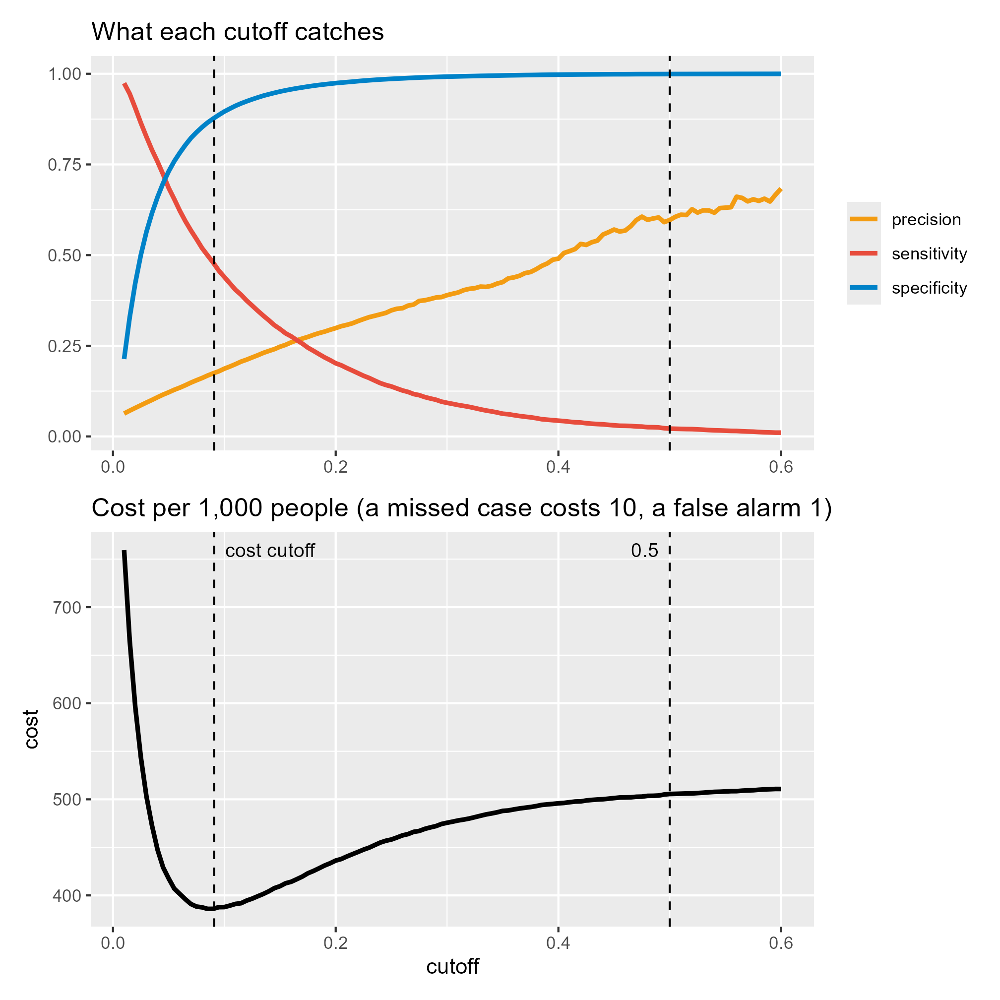
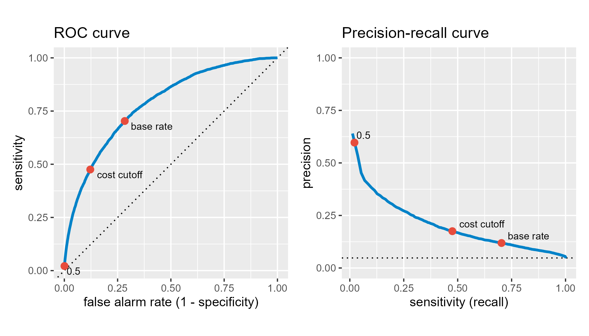
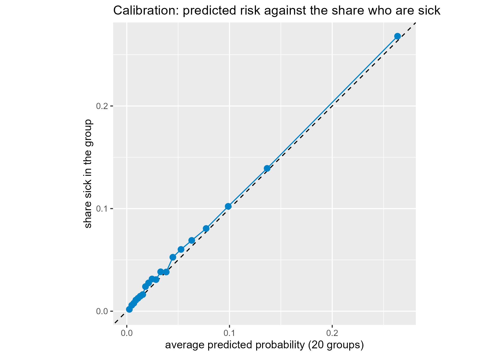
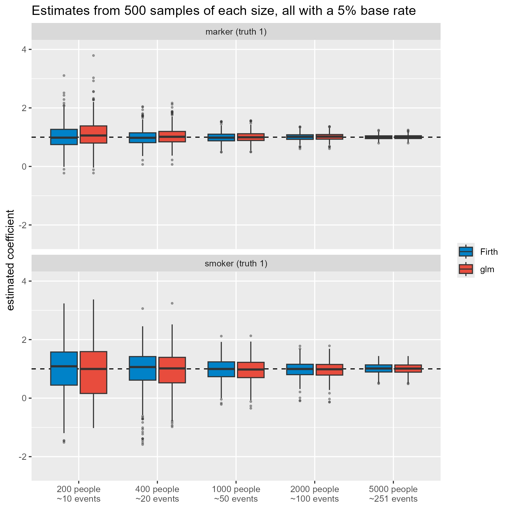
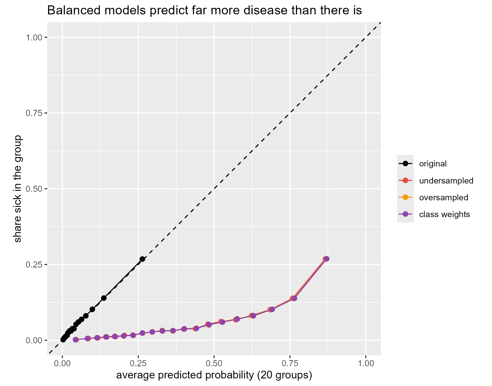

Code
library(ggplot2)
library(patchwork) # put plots side by side
library(pROC) # ROC curves and the AUC
library(logistf) # Firth's penalised logistic regression (section 5)Suppose 5% of people have a disease and we want to predict who has it from a blood marker, age and smoking. We fit a logistic regression, and a colleague says: “95% zeros and 5% ones? That is a problem, you have to balance the data first.”
It is a very common belief, and it is mostly wrong. The 95/5 split by itself does not hurt logistic regression. What does go wrong is one of four things that often come with a rare outcome:
As a reminder, logistic regression models the probability of a 1:
\[P(y = 1 \mid x) = \frac{1}{1 + e^{-(\beta_0 + \beta_1 x_1 + \beta_2 x_2 + \dots)}} \qquad\Longleftrightarrow\qquad \log\frac{P}{1 - P} = \beta_0 + \beta_1 x_1 + \beta_2 x_2 + \dots\]
The slopes \(\beta_1, \beta_2, \dots\) say how the risk changes with each predictor. The intercept \(\beta_0\) sets the overall level of risk, and that is where the 5% lives. Keep this in mind: every “fix” for imbalance in section 6 works by moving the intercept.
As in other pages of this site, we simulate the data, so we know the true answer and can check every method against it.
The true model, on the log-odds scale:
\[\log\frac{P(\text{disease})}{1 - P(\text{disease})} = -3.61 + 1.0 \times \text{marker} + 0.5 \times \text{age10} + 1.0 \times \text{smoker}\]
b_true <- c("(Intercept)" = -3.61, marker = 1.0, age10 = 0.5, smoker = 1.0)
simulate_people <- function(n) {
marker <- rnorm(n) # blood marker, in standard deviations
age10 <- rnorm(n) # age in decades from 50
smoker <- rbinom(n, 1, 0.10) # 10% smoke
log_odds <- b_true[1] + b_true[2] * marker + b_true[3] * age10 + b_true[4] * smoker
data.frame(disease = rbinom(n, 1, plogis(log_odds)), marker, age10, smoker)
}
set.seed(2026)
test <- simulate_people(100000) # "the future": new people we will judge the models on
train <- simulate_people(20000) # the data we fit the models to
c(people = nrow(train), sick = sum(train$disease), share_sick = mean(train$disease)) people sick share_sick
2.000e+04 9.550e+02 4.775e-02 plogis() turns log-odds into a probability: \(\text{plogis}(z) = 1 / (1 + e^{-z})\). So rbinom(n, 1, plogis(log_odds)) gives each person the disease with their own probability.
The training data has 955 sick people out of 20,000: a 95/5 split. In real life we never have a test set of 100,000 new people. Section 7 shows how to do without one.
Call:
glm(formula = disease ~ marker + age10 + smoker, family = binomial,
data = train)
Coefficients:
Estimate Std. Error z value Pr(>|z|)
(Intercept) -3.70687 0.05269 -70.36 <2e-16 ***
marker 1.04643 0.03767 27.78 <2e-16 ***
age10 0.49340 0.03557 13.87 <2e-16 ***
smoker 1.07257 0.08818 12.16 <2e-16 ***
---
Signif. codes: 0 '***' 0.001 '**' 0.01 '*' 0.05 '.' 0.1 ' ' 1
(Dispersion parameter for binomial family taken to be 1)
Null deviance: 7673.4 on 19999 degrees of freedom
Residual deviance: 6500.2 on 19996 degrees of freedom
AIC: 6508.2
Number of Fisher Scoring iterations: 7| Column | Meaning |
|---|---|
Estimate |
The change in the log-odds of disease for one unit more of the predictor. exp(Estimate) is the odds ratio |
Std. Error |
How uncertain the estimate is |
z value |
Estimate / Std. Error |
Pr(>|z|) |
The chance of a z this large if the true effect were 0 |
Null deviance and Residual deviance measure how badly the model without and with the predictors fits (lower is better). Their difference is the likelihood-ratio test of all the predictors together.Number of Fisher Scoring iterations is the number of steps R took to find the estimates. Usually 4 to 8. Remember it: a large number is a warning sign in section 5.Compare with the truth:
truth estimate se odds_ratio_true odds_ratio_estimated
(Intercept) -3.61 -3.707 0.053 0.03 0.02
marker 1.00 1.046 0.038 2.72 2.85
age10 0.50 0.493 0.036 1.65 1.64
smoker 1.00 1.073 0.088 2.72 2.92Every estimate is within about two standard errors of the truth. The 95/5 split did not bias anything.
There is one more check, and it holds exactly. Logistic regression with an intercept makes the average predicted probability equal to the share of 1s in the data:
average_predicted share_sick
0.04775 0.04775 Why exactly? The intercept’s estimating equation is \(\sum_i (y_i - \hat p_i) = 0\). So the model knows that the disease is rare, and its probabilities are honest about it.
Now we use the model to classify: call a person sick if their predicted probability is above 0.5, the default of many tools.
called_sick
truth FALSE TRUE
0 94766 75
1 5048 111 accuracy accuracy_call_nobody sick_people_caught
0.9487700 0.9484100 0.0215158 The model is 94.9% accurate, no better than calling everybody healthy, and it catches only 2.2% of the sick people. It looks like a useless model. It is not: the cutoff is the problem.
Take a person at the very top of the risk scale: a 60-year-old smoker with a marker 2 SD above average.
1
0.4879954 This person’s risk is about 10 times the average, and still below 0.5. When the base rate is 5%, a probability of 0.2 or 0.3 already means very high risk. The plot shows the predicted probabilities of the healthy and the sick people of the test set, drawn with plot_separability() of the rwf package:
plot_separability(observed = test$disease, predicted = p_test) +
geom_vline(xintercept = 0.5, linetype = "dashed") +
annotate("text", x = 0.51, y = Inf, label = "0.5 cutoff", hjust = 0, vjust = 1.5, size = 3.5) +
scale_colour_manual(values = c("0" = "#0082c8", "1" = "#E74C3C"), labels = c("healthy (0)", "sick (1)")) +
labs(title = "Predicted probabilities of the healthy and the sick", x = "predicted probability of disease",
y = "density", colour = NULL, caption = NULL)
The sick people (red) do get higher probabilities than the healthy ones (blue). The model does tell them apart. But nearly all of both curves lies left of 0.5, so a 0.5 cutoff throws that information away.
A classification can go wrong in two ways:
For a person with probability \(p\) of being sick:
Call them sick when that is cheaper: \((1 - p)\,C_{FP} < p\,C_{FN}\), which gives
\[\text{call sick when}\quad p > \frac{C_{FP}}{C_{FP} + C_{FN}}\]
If both errors cost the same, the cutoff is 0.5. If missing a sick person is 10 times worse than a false alarm (say, a false alarm means one more test, while a missed case goes untreated), the cutoff is \(1 / (1 + 10) = 0.091\).
The formula needs honest probabilities: a \(p\) of 0.1 must really mean 10%. We saw in section 2 that logistic regression gives them. Keep this in mind for section 6.
# what a cutoff does: everything is a share of the test set, or of a group of it
metrics <- function(y, p, cut) {
flag <- p > cut # called sick
c(cutoff = cut,
called_sick = mean(flag), # share of all people called sick
sensitivity = mean(flag[y == 1]), # sick people caught (recall)
specificity = mean(!flag[y == 0]), # healthy people cleared
precision = mean(y[flag]), # called sick who really are sick (PPV)
accuracy = mean(flag == (y == 1)))
}
cost_fn <- 10; cost_fp <- 1
cut_cost <- cost_fp / (cost_fp + cost_fn)
prevalence <- mean(train$disease)
cuts <- c(0.5, 0.3, 0.2, cut_cost, prevalence)
tab <- as.data.frame(t(sapply(cuts, function(k) metrics(test$disease, p_test, k))))
# expected cost per 1,000 people: 10 per missed case, 1 per false alarm
tab$cost_per_1000 <- sapply(cuts, function(k) {
flag <- p_test > k
1000 * (cost_fn * mean(test$disease == 1 & !flag) + cost_fp * mean(test$disease == 0 & flag))
})
round(tab, 3) cutoff called_sick sensitivity specificity precision accuracy cost_per_1000
1 0.500 0.002 0.022 0.999 0.597 0.949 505.55
2 0.300 0.012 0.093 0.992 0.390 0.946 475.59
3 0.200 0.035 0.202 0.974 0.299 0.934 436.24
4 0.091 0.140 0.475 0.878 0.175 0.857 386.17
5 0.048 0.305 0.703 0.716 0.119 0.716 422.02The cost curve finds nearly the same cutoff as the formula (the small difference is noise in the test set):
grid <- seq(0.01, 0.6, by = 0.005)
curve_df <- as.data.frame(t(sapply(grid, function(k) metrics(test$disease, p_test, k))))
curve_df$cost <- sapply(grid, function(k) {
flag <- p_test > k
1000 * (cost_fn * mean(test$disease == 1 & !flag) + cost_fp * mean(test$disease == 0 & flag))
})
long <- rbind(data.frame(cutoff = grid, value = curve_df$sensitivity, measure = "sensitivity"),
data.frame(cutoff = grid, value = curve_df$specificity, measure = "specificity"),
data.frame(cutoff = grid, value = curve_df$precision, measure = "precision"))
p1 <- ggplot(long, aes(cutoff, value, colour = measure)) +
geom_line(linewidth = 1.1) +
geom_vline(xintercept = c(cut_cost, 0.5), linetype = "dashed") +
scale_colour_manual(values = c(sensitivity = "#E74C3C", specificity = "#0082c8", precision = "#f39c12")) +
labs(title = "What each cutoff catches", x = NULL, y = NULL, colour = NULL)
p2 <- ggplot(curve_df, aes(cutoff, cost)) +
geom_line(linewidth = 1.1) +
geom_vline(xintercept = c(cut_cost, 0.5), linetype = "dashed") +
annotate("text", x = cut_cost + 0.01, y = max(curve_df$cost), label = "cost cutoff", hjust = 0, size = 3.5) +
annotate("text", x = 0.49, y = max(curve_df$cost), label = "0.5", hjust = 1, size = 3.5) +
labs(title = "Cost per 1,000 people (a missed case costs 10, a false alarm 1)",
x = "cutoff", y = "cost")
p1 / p2
formula lowest_cost_on_the_curve
0.09090909 0.08500000 A common choice is the cutoff that maximises sensitivity + specificity (Youden’s index):
threshold sensitivity specificity
1 0.04229693 0.743555 0.6784513For a model with honest probabilities this cutoff lands near the base rate (here 0.048). That is no accident: maximising sensitivity + specificity is the cost rule with \(C_{FN} / C_{FP} = (1 - \pi) / \pi\), where \(\pi\) is the base rate, and then the formula gives \(p > \pi\). So at a 5% base rate, Youden’s cutoff quietly assumes that missing one sick person is as bad as 20 false alarms. Be aware of that choice.
If the decision is “whom do we test first”, rank the people by \(p\) and work down the list as far as resources allow. If the decision is made by a doctor or a manager, give them the probability itself. A cutoff is only needed when a yes/no answer must come out of the model.
Accuracy rewards the model for the easy part, the healthy majority. Better measures look at each group separately, or at the probabilities themselves.
The AUC (area under the ROC curve) is the chance that a randomly chosen sick person gets a higher predicted probability than a randomly chosen healthy person. 0.5 is a coin toss and 1 is perfect. It compares the sick with the healthy within their own groups, so the base rate does not change it.
Area under the curve: 0.783795% CI: 0.7774-0.79 (DeLong)[1] 0.78556What is the best AUC possible with these three predictors? The true model:
Area under the curve: 0.7838Our model is as good as the truth. The poor sensitivity at 0.5 was never a fault of the model.
th <- quantile(p_test, seq(0, 0.999, length.out = 400))
rc <- as.data.frame(t(sapply(th, function(k) metrics(test$disease, p_test, k))))
marks <- as.data.frame(t(sapply(c(0.5, cut_cost, prevalence), function(k) metrics(test$disease, p_test, k))))
marks$label <- c("0.5", "cost cutoff", "base rate")
p_roc <- ggplot(rc, aes(1 - specificity, sensitivity)) +
geom_abline(linetype = "dotted") +
geom_line(colour = "#0082c8", linewidth = 1.1) +
geom_point(data = marks, colour = "#E74C3C", size = 2.5) +
geom_text(data = marks, aes(label = label), hjust = -0.15, vjust = 1.2, size = 3) +
coord_equal() +
labs(title = "ROC curve", x = "false alarm rate (1 - specificity)", y = "sensitivity")
p_pr <- ggplot(rc, aes(sensitivity, precision)) +
geom_hline(yintercept = prevalence, linetype = "dotted") +
geom_line(colour = "#0082c8", linewidth = 1.1) +
geom_point(data = marks, colour = "#E74C3C", size = 2.5) +
geom_text(data = marks, aes(label = label), hjust = -0.15, vjust = -0.5, size = 3) +
scale_y_continuous(limits = c(0, 1)) +
labs(title = "Precision-recall curve", x = "sensitivity (recall)", y = "precision")
p_roc + p_pr
The Brier score is the mean squared difference between the predicted probability and what happened (0 or 1). Lower is better. A model that gives everybody the base rate scores \(\pi(1 - \pi)\), so the scaled Brier score \(1 - \text{Brier} / [\pi(1 - \pi)]\) is the improvement over knowing nothing but the base rate.
brier <- function(y, p) mean((p - y)^2)
base_rate_test <- mean(test$disease) # the base rate of the people we judge the model on
b_model <- brier(test$disease, p_test)
b_null <- base_rate_test * (1 - base_rate_test) # give everybody the base rate
c(brier = b_model, brier_base_rate_only = b_null, scaled_brier = 1 - b_model / b_null) brier brier_base_rate_only scaled_brier
0.04486773 0.04892847 0.08299347 The model improves on the base rate by about 8%. That sounds small, but it is typical: with a rare outcome both numbers are small and close together, because predicting “almost 0” for everybody is already nearly right. Use the Brier score to compare models fitted to the same outcome, not on its own.
Calibration asks whether a predicted 10% really comes true 10% of the time. Sort the people into 20 groups by predicted probability and compare each group’s average prediction with the share who are sick:
calibration_bins <- function(y, p, bins = 20) {
g <- cut(p, unique(quantile(p, seq(0, 1, length.out = bins + 1))), include.lowest = TRUE)
data.frame(predicted = as.numeric(tapply(p, g, mean)), observed = as.numeric(tapply(y, g, mean)))
}
cal <- calibration_bins(test$disease, p_test)
ggplot(cal, aes(predicted, observed)) +
geom_abline(linetype = "dashed") +
geom_line(colour = "#0082c8") +
geom_point(colour = "#0082c8", size = 2.5) +
coord_equal(xlim = c(0, max(cal)), ylim = c(0, max(cal))) +
labs(title = "Calibration: predicted risk against the share who are sick",
x = "average predicted probability (20 groups)", y = "share sick in the group")
The points lie close to the diagonal. They sit slightly above it because, by chance, the training sample has a few fewer sick people (4.8%) than the test set (5.2%). Two numbers summarise the plot:
calibration_intercept calibration_slope
0.07899984 0.95165337 So far we had 955 sick people. Now the problem that is real: a small sample, where 5% is only a handful of people.
people sick
200 10 disease
smoker 0 1
0 172 10
1 18 0Only 10 people are sick, and by chance none of the 18 smokers is. Ordinary logistic regression:
Call:
glm(formula = disease ~ marker + age10 + smoker, family = binomial,
data = small)
Coefficients:
Estimate Std. Error z value Pr(>|z|)
(Intercept) -3.24939 0.43961 -7.392 1.45e-13 ***
marker 0.79318 0.32754 2.422 0.0155 *
age10 0.07154 0.33284 0.215 0.8298
smoker -15.17658 1493.28802 -0.010 0.9919
---
Signif. codes: 0 '***' 0.001 '**' 0.01 '*' 0.05 '.' 0.1 ' ' 1
(Dispersion parameter for binomial family taken to be 1)
Null deviance: 79.406 on 199 degrees of freedom
Residual deviance: 70.988 on 196 degrees of freedom
AIC: 78.988
Number of Fisher Scoring iterations: 17Look at smoker: an estimate of about -15, an odds ratio of 0.0000003, which says that smokers cannot get the disease, with an enormous standard error. In truth smoking multiplies the odds by 2.7.
This is separation. Because no smoker is sick, the likelihood keeps increasing as the smoker coefficient goes towards \(-\infty\), so the best estimate does not exist. R stops when the improvement becomes tiny, after 17 iterations instead of the usual 4 to 8, and reports wherever it stopped. Sometimes glm() warns “fitted probabilities numerically 0 or 1 occurred”, often, as here, it says nothing. Signs to look for: a huge estimate, a huge standard error, many iterations, and a category of a predictor with no 1s (or no 0s) in it.
Ordinary logistic regression maximises the log-likelihood \(\log L(\beta)\). Firth’s method maximises a penalised version:
\[\log L^*(\beta) = \log L(\beta) + \tfrac{1}{2} \log \left| I(\beta) \right|\]
\(I(\beta)\) is the Fisher information: how much the data can tell us about \(\beta\). It is largest when the predicted probabilities are away from 0 and 1, and it shrinks towards 0 as a coefficient runs off to infinity. So the penalty pulls the estimates back from infinity, by a lot when the data say little (as for the smokers here) and by almost nothing when the data say much. It also removes most of the small-sample bias of ordinary maximum likelihood, which makes coefficients too large in small samples. In R, logistf() fits it (install.packages("logistf")):
logistf(formula = disease ~ marker + age10 + smoker, data = small)
Model fitted by Penalized ML
Coefficients:
coef se(coef) lower 0.95 upper 0.95 Chisq p method
(Intercept) -3.08649293 0.4004973 -4.0331079 -2.382327 Inf 0.00000000 2
marker 0.74629289 0.2987553 0.1483080 1.402900 6.04305392 0.01396111 2
age10 0.08679259 0.3021880 -0.5682952 0.712907 0.07135286 0.78937710 2
smoker -0.37756420 1.4498505 -5.2664768 1.846124 0.07075176 0.79024535 2
Method: 1-Wald, 2-Profile penalized log-likelihood, 3-None
Likelihood ratio test=6.532561 on 3 df, p=0.0883872, n=200
Wald test = 74.32831 on 3 df, p = 5.551115e-16coef are the estimates. The smoker effect is now finite.lower 0.95, upper 0.95 are 95% confidence intervals from the profile penalised likelihood. They are better than estimate ± 1.96 SE in small samples, because they need not be symmetric.Chisq and p test each coefficient against 0 with a likelihood-ratio test.The smoker interval is very wide, and it should be: 18 smokers and no case among them tell us very little. Firth gives an honest “we do not know much” instead of a nonsense “never”.
flic()The Firth penalty also pulls the intercept towards 0, which pushes the predicted probabilities towards 0.5. With a rare outcome they come out a little too high on average. flic() (Firth’s logistic regression with intercept correction) keeps Firth’s slopes and re-estimates the intercept, so that the average prediction again equals the share of 1s:
share_sick glm firth firth_flic
0.05000000 0.05000000 0.05833987 0.05000000 Use logistf() for the coefficients (odds ratios and their intervals) and flic() for predicted probabilities.
One sample proves little. We draw 500 samples at each of five sizes, always with a 5% base rate, fit ordinary and Firth logistic regression to each, and compare the estimates with the truth.
one_sample <- function(n) {
d <- simulate_people(n)
g <- suppressWarnings(glm(disease ~ marker + age10 + smoker, family = binomial, data = d))
f <- logistf(disease ~ marker + age10 + smoker, data = d, pl = FALSE) # pl = FALSE: skip the intervals, faster
c(n = n, events = sum(d$disease),
separation = sum(d$disease[d$smoker == 1]) == 0, # no sick smoker in the sample
glm_marker = unname(coef(g)["marker"]), firth_marker = unname(coef(f)["marker"]),
glm_smoker = unname(coef(g)["smoker"]), firth_smoker = unname(coef(f)["smoker"]))
}
sizes <- c(200, 400, 1000, 2000, 5000)
set.seed(1)
sim <- as.data.frame(do.call(rbind, lapply(sizes, function(n) t(replicate(500, one_sample(n))))))
rmse <- function(x, truth) sqrt(mean((x - truth)^2)) # typical distance from the truth
sim_table <- do.call(rbind, lapply(split(sim, sim$n), function(s) data.frame(
n = s$n[1],
events = round(mean(s$events)),
separation_pct = round(100 * mean(s$separation), 1),
marker_glm_mean = round(mean(s$glm_marker), 3),
marker_firth_mean = round(mean(s$firth_marker), 3),
marker_glm_sd = round(sd(s$glm_marker), 3),
smoker_glm_rmse = round(rmse(s$glm_smoker, 1), 2),
smoker_firth_rmse = round(rmse(s$firth_smoker, 1), 2))))
sim_table n events separation_pct marker_glm_mean marker_firth_mean marker_glm_sd smoker_glm_rmse smoker_firth_rmse
200 200 10 13.8 1.109 1.015 0.473 6.27 0.86
400 400 20 3.0 1.041 1.003 0.292 2.98 0.69
1000 1000 50 0.0 1.000 0.986 0.175 0.39 0.37
2000 2000 100 0.0 1.013 1.006 0.122 0.29 0.28
5000 5000 251 0.0 1.002 0.999 0.072 0.18 0.17sim$size <- factor(paste0(sim$n, " people\n~", round(ave(sim$events, sim$n)), " events"),
levels = unique(paste0(sim$n, " people\n~", round(ave(sim$events, sim$n)), " events")))
long_sim <- rbind(
data.frame(size = sim$size, coefficient = "marker (truth 1)", method = "glm", estimate = sim$glm_marker),
data.frame(size = sim$size, coefficient = "marker (truth 1)", method = "Firth", estimate = sim$firth_marker),
data.frame(size = sim$size, coefficient = "smoker (truth 1)", method = "glm", estimate = sim$glm_smoker),
data.frame(size = sim$size, coefficient = "smoker (truth 1)", method = "Firth", estimate = sim$firth_smoker))
ggplot(long_sim, aes(size, estimate, fill = method)) +
geom_hline(yintercept = 1, linetype = "dashed") +
geom_boxplot(outlier.size = 0.6, outlier.alpha = 0.4) +
facet_wrap(~coefficient, ncol = 1) +
coord_cartesian(ylim = c(-2.5, 4)) + # glm's separated estimates (around -16) are below the chart
scale_fill_manual(values = c(glm = "#E74C3C", Firth = "#0082c8")) +
labs(title = "Estimates from 500 samples of each size, all with a 5% base rate",
x = NULL, y = "estimated coefficient", fill = NULL)
What the table and plot show:
marker_glm_sd) falls from 0.473 with about 10 events to 0.072 with about 251: roughly in proportion to \(1/\sqrt{\text{events}}\). What matters is how many 1s there are, not what percentage they are.glm() gave a smoker coefficient around -16 (below the chart). Its typical error for smokers (smoker_glm_rmse) is 6.27, against 0.86 for Firth. Even for the marker, glm() overestimates the effect on average (1.109 instead of 1), while Firth is close to 1.pmsampsize package does the calculation.glmnet(..., family = "binomial") does it for a binary outcome.The usual advice for imbalance is to balance the data before fitting:
set.seed(7)
ones <- train[train$disease == 1, ]
zeros <- train[train$disease == 0, ]
n1 <- nrow(ones); n0 <- nrow(zeros)
under <- rbind(ones, zeros[sample(n0, n1), ]) # all 1s, as many random 0s
over <- rbind(zeros, ones[sample(n1, n0, replace = TRUE), ]) # all 0s, 1s copied up to as many
w <- ifelse(train$disease == 1, round(n0 / n1), 1) # weight about 20 for each 1
form <- disease ~ marker + age10 + smoker
models <- list("original" = fit,
"undersampled" = glm(form, family = binomial, data = under),
"oversampled" = glm(form, family = binomial, data = over),
"class weights" = glm(form, family = binomial, data = train, weights = w))
summarise_model <- function(m) {
p <- predict(m, newdata = test, type = "response")
c(rows_used = nrow(m$model),
intercept = unname(coef(m)[1]),
marker = unname(coef(m)["marker"]),
marker_se = unname(sqrt(diag(vcov(m)))["marker"]),
average_prediction = mean(p),
auc = as.numeric(auc(roc(test$disease, p, levels = c(0, 1), direction = "<", quiet = TRUE))),
brier = brier(test$disease, p))
}
round(t(sapply(models, summarise_model)), 3) rows_used intercept marker marker_se average_prediction auc brier
original 20000 -3.707 1.046 0.038 0.048 0.784 0.045
undersampled 1910 -0.744 1.059 0.061 0.380 0.784 0.185
oversampled 38090 -0.734 1.089 0.014 0.381 0.784 0.187
class weights 20000 -0.735 1.087 0.014 0.382 0.784 0.187Row by row:
auc is the same for all four. Balancing did not make the model better at telling the sick from the healthy, not even a little.marker is about the same. The slopes barely move: balancing does not change how risk depends on the predictors.intercept jumped from about \(-3.7\) to about \(-0.75\). That is \(\log(n_0 / n_1) = \log(19.9) = 2.99\) higher: the balanced models think the base rate is 50%.average_prediction is therefore about 0.38 instead of 0.048. The probabilities are about 8 times too high on average, and the Brier score is worse. You can no longer read them as risks, or use them with the cost cutoff of section 3.marker_se is too small for oversampling and weights (0.014 against 0.038): the copies of the same sick people are counted as new people, so confidence intervals and p values are far too optimistic. Undersampling has the opposite problem: it threw away 18,090 people and their information, so its SE is larger.The calibration plot shows the damage:
cal_all <- do.call(rbind, lapply(names(models), function(nm) {
p <- predict(models[[nm]], newdata = test, type = "response")
data.frame(calibration_bins(test$disease, p), model = nm)
}))
cal_all$model <- factor(cal_all$model, levels = names(models))
ggplot(cal_all, aes(predicted, observed, colour = model)) +
geom_abline(linetype = "dashed") +
geom_line() +
geom_point(size = 2) +
scale_colour_manual(values = c("original" = "black", "undersampled" = "#E74C3C",
"oversampled" = "#f39c12", "class weights" = "#8E44AD")) +
coord_equal(xlim = c(0, 1), ylim = c(0, 1)) +
labs(title = "Balanced models predict far more disease than there is",
x = "average predicted probability (20 groups)", y = "share sick in the group", colour = NULL)
The original model sits on the diagonal (in the bottom-left corner, where the risks of a rare disease are). The three balanced models lie on top of each other, far below it: where they predict about 60%, only about 7% are sick.
Why does balancing seem to “work” for people who use the 0.5 cutoff? Undersampling the 0s by a factor \(r\) multiplies the odds by \(r\), so it adds \(\log r\) to every log-odds:
\[\text{log-odds}_{\text{balanced}} \approx \text{log-odds}_{\text{original}} + \log\frac{1 - \pi}{\pi}\]
So \(p_{\text{balanced}} > 0.5\) (log-odds above 0) is the same as \(\text{log-odds}_{\text{original}} > \log\frac{\pi}{1 - \pi}\), which is \(p_{\text{original}} > \pi\). The balanced model at 0.5 classifies like the original model at the base rate:
balanced_at_0.5
original_at_base_rate FALSE TRUE
FALSE 69280 200
TRUE 596 29924agreement
0.99204 The two classify 99.2% of people the same way. The small differences come from the random 0s that undersampling kept. Balancing is a roundabout way of choosing a cutoff, and it costs you honest probabilities, correct standard errors or data. Moving the cutoff of the original model (section 3) gets the same classifications with none of these costs.
Sometimes sampling on the outcome is a good design. If measuring the predictors is expensive (a lab test, an interview), it is sensible to measure all the sick people and only some of the healthy ones: a case-control design. The slopes from such a sample are still valid (Prentice & Pyke, 1979). Only the intercept is off, and it can be corrected if the true base rate \(\tau\) is known (King & Zeng, 2001):
\[\hat\beta_0^{\text{corrected}} = \hat\beta_0 - \log\left[\frac{\bar y}{1 - \bar y} \cdot \frac{1 - \tau}{\tau}\right]\]
where \(\bar y\) is the share of 1s in the sample (0.5 here) and \(\tau\) the share in the population.
m_under <- models[["undersampled"]]
y_bar <- mean(under$disease) # 0.5 in the balanced sample
tau <- prevalence # the true base rate, known from elsewhere
m_corrected <- m_under
m_corrected$coefficients[1] <- coef(m_under)[1] - log((y_bar / (1 - y_bar)) * ((1 - tau) / tau))
p_corrected <- predict(m_corrected, newdata = test, type = "response")
round(c(intercept_truth = unname(b_true[1]), intercept_original = unname(coef(fit)[1]),
intercept_corrected = unname(coef(m_corrected)[1]),
average_prediction_original = mean(p_test), average_prediction_corrected = mean(p_corrected)), 3) intercept_truth intercept_original intercept_corrected average_prediction_original average_prediction_corrected
-3.610 -3.707 -3.737 0.048 0.048 After the correction the undersampled model predicts like the model fitted to all the data, from 1,910 people instead of 20,000. Its standard errors are larger, the price of the smaller sample, but they are correct.
In practice there is no test set of 100,000. Judge the model on data it has not seen: hold out part of the data, or use cross-validation or the bootstrap. The steps:
logistf(), and flic() for predictions), fewer predictors, or a penalised regression.Here are the steps with 10-fold cross-validation on the training data. Every person gets a prediction from a model fitted without them:
set.seed(11)
k <- 10
fold <- sample(rep(1:k, length.out = nrow(train)))
p_cv <- numeric(nrow(train))
for (i in 1:k) {
m <- glm(disease ~ marker + age10 + smoker, family = binomial, data = train[fold != i, ])
p_cv[fold == i] <- predict(m, newdata = train[fold == i, ], type = "response")
}
c(events = sum(train$disease),
events_per_coefficient = sum(train$disease) / 3,
auc_cv = as.numeric(auc(roc(train$disease, p_cv, levels = c(0, 1), direction = "<", quiet = TRUE))),
scaled_brier_cv = 1 - brier(train$disease, p_cv) / (prevalence * (1 - prevalence)),
calibration_slope_cv = unname(coef(glm(train$disease ~ qlogis(p_cv), family = binomial))[2])) events events_per_coefficient auc_cv scaled_brier_cv calibration_slope_cv
955.00000000 318.33333333 0.79712948 0.08174037 0.99638144 cutoff called_sick sensitivity specificity precision accuracy
0.091 0.138 0.489 0.879 0.169 0.861 The cross-validated numbers are close to what the test set of 100,000 showed, so in real data, where there is no such test set, cross-validation tells the same story.
A report (APA 7th edition) should give the number of events, the effects with their uncertainty, and how well the model predicts: discrimination, calibration and, if you classify, the cutoff and why. We collect the numbers from the R objects:
or <- exp(coef(fit))
or_ci <- exp(confint(fit)) # profile-likelihood 95% CI
s <- summary(fit)$coefficients
auc_ci <- as.numeric(ci.auc(roc_test)) # lower, AUC, upper
cal_slope <- unname(coef(glm(test$disease ~ qlogis(p_test), family = binomial))[2])
at_cut <- metrics(test$disease, p_test, cut_cost)
f2 <- function(x) formatC(x, format = "f", digits = 2)
nz <- function(x, d = 2) sub("^0", "", formatC(x, format = "f", digits = d)) # no leading zero
pval <- function(p) if (p < .001) "< .001" else paste("=", nz(p, 3))Method (data analysis):
Disease status was analysed with logistic regression, with the blood marker, age (in decades) and smoking as predictors. Of the 20,000 participants, 955 (4.8%) had the disease, giving 318 events per estimated coefficient. The data were not resampled or weighted. Predictive performance was assessed in an independent validation sample (N = 100,000) with the area under the ROC curve (AUC), the Brier score and the calibration slope. Participants were classified as at risk when their predicted probability exceeded .091, the cutoff that minimises the expected cost when a missed case is judged 10 times as costly as a false alarm. Analyses were conducted in R (Version 4.6.2; R Core Team, 2026) with the pROC package.
Results:
A higher marker level, OR = 2.85, 95% CI [2.65, 3.07], p < .001, older age, OR = 1.64 per decade, 95% CI [1.53, 1.76], p < .001, and smoking, OR = 2.92, 95% CI [2.45, 3.47], p < .001, were each associated with higher odds of disease. In the validation sample the model discriminated well, AUC = .78, 95% CI [.78, .79], and was well calibrated (calibration slope = 0.95; Brier score = .045, against .049 for predicting the base rate). At the cutoff of .091, sensitivity was .48, specificity .88 and the positive predictive value .18, with 14.0% of participants classified as at risk.
Table 1
Logistic Regression Predicting Disease
| Predictor | b | SE | OR | 95% CI for OR | p |
|---|---|---|---|---|---|
| Marker (SD) | 1.05 | 0.04 | 2.85 | [2.65, 3.07] | < .001 |
| Age (decades) | 0.49 | 0.04 | 1.64 | [1.53, 1.76] | < .001 |
| Smoker | 1.07 | 0.09 | 2.92 | [2.45, 3.47] | < .001 |
Note. N = 20,000, 955 cases (4.8%). Intercept b = -3.71. Confidence intervals are profile-likelihood intervals. AUC in the validation sample = .78.
Points to remember:
citation(), citation("pROC") and citation("logistf") in R give the exact references.| Is 95/5 a problem? | Not by itself. Logistic regression estimates the slopes without bias and gives honest probabilities whatever the split |
| The 0.5 cutoff | With a rare outcome almost nobody passes it. Use \(p > C_{FP} / (C_{FP} + C_{FN})\), or give the probabilities |
| Accuracy | Calling everybody 0 is already 95% accurate. Use the AUC, the precision-recall curve, the Brier score and a calibration plot |
| Few events | The real problem: count the 1s, not the percentage. Aim for 10 or more events per coefficient |
| Separation | A huge estimate and SE, many iterations, a category with no 1s. Use Firth: logistf(), with flic() for predictions |
| Under/oversampling, SMOTE, weights | Same AUC, wrong probabilities, wrong (or wasted) standard errors. They only move the cutoff |
| Case-control data | Slopes are fine. Correct the intercept with the known base rate |
| R | glm(y ~ x, family = binomial); logistf::logistf() and flic(); pROC::roc(), auc(), ci.auc(), coords() |
Elkan, C. (2001). The foundations of cost-sensitive learning. In Proceedings of the Seventeenth International Joint Conference on Artificial Intelligence (pp. 973–978).
Firth, D. (1993). Bias reduction of maximum likelihood estimates. Biometrika, 80(1), 27–38.
Heinze, G., & Schemper, M. (2002). A solution to the problem of separation in logistic regression. Statistics in Medicine, 21(16), 2409–2419.
Heinze, G., Ploner, M., Jiricka, L., & Steiner, G. (2025). logistf: Firth’s bias-reduced logistic regression (R package version 1.26.1). https://CRAN.R-project.org/package=logistf
King, G., & Zeng, L. (2001). Logistic regression in rare events data. Political Analysis, 9(2), 137–163.
Peduzzi, P., Concato, J., Kemper, E., Holford, T. R., & Feinstein, A. R. (1996). A simulation study of the number of events per variable in logistic regression analysis. Journal of Clinical Epidemiology, 49(12), 1373–1379.
Prentice, R. L., & Pyke, R. (1979). Logistic disease incidence models and case-control studies. Biometrika, 66(3), 403–411.
Puhr, R., Heinze, G., Nold, M., Lusa, L., & Geroldinger, A. (2017). Firth’s logistic regression with rare events: Accurate effect estimates and predictions? Statistics in Medicine, 36(14), 2302–2317.
Riley, R. D., Ensor, J., Snell, K. I. E., Harrell, F. E., Martin, G. P., Reitsma, J. B., Moons, K. G. M., Collins, G., & van Smeden, M. (2020). Calculating the sample size required for developing a clinical prediction model. BMJ, 368, m441.
Robin, X., Turck, N., Hainard, A., Tiberti, N., Lisacek, F., Sanchez, J.-C., & Müller, M. (2011). pROC: An open-source package for R and S+ to analyze and compare ROC curves. BMC Bioinformatics, 12, 77.
van den Goorbergh, R., van Smeden, M., Timmerman, D., & Van Calster, B. (2022). The harm of class imbalance corrections for risk prediction models: Illustration and simulation using logistic regression. Journal of the American Medical Informatics Association, 29(9), 1525–1534.
van Smeden, M., de Groot, J. A. H., Moons, K. G. M., Collins, G. S., Altman, D. G., Eijkemans, M. J. C., & Reitsma, J. B. (2016). No rationale for 1 variable per 10 events criterion for binary logistic regression analysis. BMC Medical Research Methodology, 16, 163.
plot_separability() on this page---
title: "Logistic Regression With a Rare Outcome: Is a 95/5 Split a Problem?"
description: "Logistic regression with 95% zeros and 5% ones in R: why the 0.5 cutoff, accuracy and resampling mislead, and how cutoffs, Firth and calibration fix it."
author: ""
output:
html_document:
css: styles.css
theme: flatly
highlight: tango
toc: true
toc_float: true
code_folding: show
self_contained: true
vignette: "%\\VignetteIndexEntry{Logistic Regression With a Rare Outcome} %\\VignetteEngine{knitr::rmarkdown} %\\VignetteEncoding{UTF-8}\n"
---
```{r options, echo=FALSE, warning=FALSE, message=FALSE}
directory<-if (rstudioapi::isAvailable()) paste0(dirname(rstudioapi::getActiveDocumentContext()$path),"/") else ""
source(paste0(directory, "R/code_options.R"))
source(paste0(directory, "R/code_rwf.R"))
# wider, shorter figures than the site default; no knitr cache: cached chunks would not
# notice an edit to the simulated data
knitr::opts_chunk$set(fig.height = 4.5, cache = FALSE)
```
## The problem: 95 zeros for every 5 ones
Suppose **5% of people have a disease** and we want to predict who has it from a blood marker, age and smoking. We fit a logistic regression, and a colleague says: *"95% zeros and 5% ones? That is a problem, you have to balance the data first."*
It is a very common belief, and it is **mostly wrong**. The 95/5 split by itself does not hurt logistic regression. What does go wrong is one of four things that often come **with** a rare outcome:
1. **The 0.5 cutoff** (section 3). With a 5% base rate almost nobody gets a predicted probability above 0.5, so the model "predicts" that nobody is sick.
2. **Judging the model by accuracy** (section 4). Calling everybody healthy is already 95% accurate.
3. **Too few events** (section 5). What limits the model is the **number** of 1s, not their percentage. With only a handful of them, estimates are unstable and can even run off to infinity.
4. **The popular "fixes"** (section 6). Oversampling, undersampling, SMOTE and class weights do not make the model better at telling the groups apart. They make its probabilities wrong.
As a reminder, logistic regression models the **probability** of a 1:
$$P(y = 1 \mid x) = \frac{1}{1 + e^{-(\beta_0 + \beta_1 x_1 + \beta_2 x_2 + \dots)}} \qquad\Longleftrightarrow\qquad \log\frac{P}{1 - P} = \beta_0 + \beta_1 x_1 + \beta_2 x_2 + \dots$$
The slopes $\beta_1, \beta_2, \dots$ say how the risk **changes** with each predictor. The intercept $\beta_0$ sets the overall **level** of risk, and that is where the 5% lives. Keep this in mind: every "fix" for imbalance in section 6 works by moving the intercept.
As in other pages of this site, we **simulate** the data, so we know the true answer and can check every method against it.
```{r packages}
library(ggplot2)
library(patchwork) # put plots side by side
library(pROC) # ROC curves and the AUC
library(logistf) # Firth's penalised logistic regression (section 5)
```
---
## 1. Simulate the data
The true model, on the log-odds scale:
$$\log\frac{P(\text{disease})}{1 - P(\text{disease})} = -3.61 + 1.0 \times \text{marker} + 0.5 \times \text{age10} + 1.0 \times \text{smoker}$$
- **marker**: a blood marker in standard deviations. One SD more multiplies the odds of disease by $e^{1} = 2.72$.
- **age10**: age in decades from 50 (so 1 means 60 years old). Each decade multiplies the odds by $e^{0.5} = 1.65$.
- **smoker**: 1 for the 10% of people who smoke. Smoking multiplies the odds by $e^{1} = 2.72$.
- The intercept $-3.61$ was chosen so that **5%** of people have the disease.
```{r simulate}
b_true <- c("(Intercept)" = -3.61, marker = 1.0, age10 = 0.5, smoker = 1.0)
simulate_people <- function(n) {
marker <- rnorm(n) # blood marker, in standard deviations
age10 <- rnorm(n) # age in decades from 50
smoker <- rbinom(n, 1, 0.10) # 10% smoke
log_odds <- b_true[1] + b_true[2] * marker + b_true[3] * age10 + b_true[4] * smoker
data.frame(disease = rbinom(n, 1, plogis(log_odds)), marker, age10, smoker)
}
set.seed(2026)
test <- simulate_people(100000) # "the future": new people we will judge the models on
train <- simulate_people(20000) # the data we fit the models to
c(people = nrow(train), sick = sum(train$disease), share_sick = mean(train$disease))
```
`plogis()` turns log-odds into a probability: $\text{plogis}(z) = 1 / (1 + e^{-z})$. So `rbinom(n, 1, plogis(log_odds))` gives each person the disease with their own probability.
The training data has `r sum(train$disease)` sick people out of `r format(nrow(train), big.mark = ",")`: a `r round(100 * (1 - mean(train$disease)))`/`r round(100 * mean(train$disease))` split. In real life we never have a test set of 100,000 new people. Section 7 shows how to do without one.
---
## 2. A large sample: the model is fine
```{r fit}
fit <- glm(disease ~ marker + age10 + smoker, family = binomial, data = train)
summary(fit)
```
### How to read the output
| Column | Meaning |
|---|---|
| `Estimate` | The change in the **log-odds** of disease for one unit more of the predictor. `exp(Estimate)` is the **odds ratio** |
| `Std. Error` | How uncertain the estimate is |
| `z value` | `Estimate / Std. Error` |
| `Pr(>|z|)` | The chance of a *z* this large if the true effect were 0 |
- **`Null deviance`** and **`Residual deviance`** measure how badly the model without and with the predictors fits (lower is better). Their difference is the likelihood-ratio test of all the predictors together.
- **`Number of Fisher Scoring iterations`** is the number of steps R took to find the estimates. Usually 4 to 8. Remember it: a large number is a warning sign in section 5.
Compare with the truth:
```{r compare_truth}
data.frame(truth = b_true, estimate = round(coef(fit), 3), se = round(sqrt(diag(vcov(fit))), 3),
odds_ratio_true = round(exp(b_true), 2), odds_ratio_estimated = round(exp(coef(fit)), 2))
```
Every estimate is within about two standard errors of the truth. The 95/5 split did not bias anything.
There is one more check, and it holds **exactly**. Logistic regression with an intercept makes the average predicted probability equal to the share of 1s in the data:
```{r calibration_in_the_large}
p_train <- predict(fit, type = "response") # type = "response": probabilities, not log-odds
c(average_predicted = mean(p_train), share_sick = mean(train$disease))
```
Why exactly? The intercept's estimating equation is $\sum_i (y_i - \hat p_i) = 0$. So the model knows that the disease is rare, and its probabilities are honest about it.
---
## 3. Problem 1: the 0.5 cutoff
Now we use the model to **classify**: call a person sick if their predicted probability is above 0.5, the default of many tools.
```{r cutoff_half}
p_test <- predict(fit, newdata = test, type = "response")
called_sick <- p_test > 0.5
table(truth = test$disease, called_sick)
```
```{r cutoff_half_rates}
c(accuracy = mean(called_sick == (test$disease == 1)),
accuracy_call_nobody = mean(test$disease == 0), # call everybody healthy
sick_people_caught = mean(called_sick[test$disease == 1]))
```
The model is `r round(100 * mean(called_sick == (test$disease == 1)), 1)`% accurate, no better than calling everybody healthy, and it catches only `r round(100 * mean(called_sick[test$disease == 1]), 1)`% of the sick people. It looks like a useless model. It is not: the **cutoff** is the problem.
### Why almost nobody passes 0.5
Take a person at the very top of the risk scale: a 60-year-old smoker with a marker 2 SD above average.
```{r high_risk_person}
predict(fit, newdata = data.frame(marker = 2, age10 = 1, smoker = 1), type = "response")
```
This person's risk is about `r round(predict(fit, data.frame(marker = 2, age10 = 1, smoker = 1), type = "response") / mean(train$disease))` times the average, and **still** below 0.5. When the base rate is 5%, a probability of 0.2 or 0.3 already means **very high risk**. The plot shows the predicted probabilities of the healthy and the sick people of the test set, drawn with `plot_separability()` of the rwf package:
```{r separability}
plot_separability(observed = test$disease, predicted = p_test) +
geom_vline(xintercept = 0.5, linetype = "dashed") +
annotate("text", x = 0.51, y = Inf, label = "0.5 cutoff", hjust = 0, vjust = 1.5, size = 3.5) +
scale_colour_manual(values = c("0" = "#0082c8", "1" = "#E74C3C"), labels = c("healthy (0)", "sick (1)")) +
labs(title = "Predicted probabilities of the healthy and the sick", x = "predicted probability of disease",
y = "density", colour = NULL, caption = NULL)
```
The sick people (red) do get higher probabilities than the healthy ones (blue). The model **does** tell them apart. But nearly all of both curves lies left of 0.5, so a 0.5 cutoff throws that information away.
### Choosing the cutoff from the costs of the two errors
A classification can go wrong in two ways:
- **False negative** (FN): a sick person called healthy. Cost $C_{FN}$.
- **False positive** (FP): a healthy person called sick. Cost $C_{FP}$.
For a person with probability $p$ of being sick:
- calling them **healthy** costs $C_{FN}$ with probability $p$, so on average $p \cdot C_{FN}$;
- calling them **sick** costs $C_{FP}$ with probability $1 - p$, so on average $(1 - p) \cdot C_{FP}$.
Call them sick when that is cheaper: $(1 - p)\,C_{FP} < p\,C_{FN}$, which gives
$$\text{call sick when}\quad p > \frac{C_{FP}}{C_{FP} + C_{FN}}$$
If both errors cost the same, the cutoff is 0.5. If missing a sick person is **10 times** worse than a false alarm (say, a false alarm means one more test, while a missed case goes untreated), the cutoff is $1 / (1 + 10) = 0.091$.
The formula needs **honest probabilities**: a $p$ of 0.1 must really mean 10%. We saw in section 2 that logistic regression gives them. Keep this in mind for section 6.
```{r metrics}
# what a cutoff does: everything is a share of the test set, or of a group of it
metrics <- function(y, p, cut) {
flag <- p > cut # called sick
c(cutoff = cut,
called_sick = mean(flag), # share of all people called sick
sensitivity = mean(flag[y == 1]), # sick people caught (recall)
specificity = mean(!flag[y == 0]), # healthy people cleared
precision = mean(y[flag]), # called sick who really are sick (PPV)
accuracy = mean(flag == (y == 1)))
}
cost_fn <- 10; cost_fp <- 1
cut_cost <- cost_fp / (cost_fp + cost_fn)
prevalence <- mean(train$disease)
cuts <- c(0.5, 0.3, 0.2, cut_cost, prevalence)
tab <- as.data.frame(t(sapply(cuts, function(k) metrics(test$disease, p_test, k))))
# expected cost per 1,000 people: 10 per missed case, 1 per false alarm
tab$cost_per_1000 <- sapply(cuts, function(k) {
flag <- p_test > k
1000 * (cost_fn * mean(test$disease == 1 & !flag) + cost_fp * mean(test$disease == 0 & flag))
})
round(tab, 3)
```
- At **0.5**, almost nobody is called sick: high accuracy, but nearly every sick person is missed, and the cost is the highest.
- At **`r round(cut_cost, 3)`** (the cost cutoff), about `r round(100 * tab$sensitivity[4])`% of the sick are caught, while `r round(100 * tab$called_sick[4])`% of all people are called sick. Accuracy **drops**, yet this cutoff has the lowest cost: accuracy counts both errors as equally bad, which is exactly what we said they are not.
- **Precision** is modest at every cutoff that catches a useful share of the sick: at the cost cutoff, about 1 in `r round(1 / tab$precision[4])` people called sick really is sick. With 95 healthy people for every 5 sick ones, even a small share of false alarms among the healthy outnumbers the true alarms. That is a fact about rare outcomes, not a fault of the model.
The cost curve finds nearly the same cutoff as the formula (the small difference is noise in the test set):
```{r cutoff_curves, fig.height = 7}
grid <- seq(0.01, 0.6, by = 0.005)
curve_df <- as.data.frame(t(sapply(grid, function(k) metrics(test$disease, p_test, k))))
curve_df$cost <- sapply(grid, function(k) {
flag <- p_test > k
1000 * (cost_fn * mean(test$disease == 1 & !flag) + cost_fp * mean(test$disease == 0 & flag))
})
long <- rbind(data.frame(cutoff = grid, value = curve_df$sensitivity, measure = "sensitivity"),
data.frame(cutoff = grid, value = curve_df$specificity, measure = "specificity"),
data.frame(cutoff = grid, value = curve_df$precision, measure = "precision"))
p1 <- ggplot(long, aes(cutoff, value, colour = measure)) +
geom_line(linewidth = 1.1) +
geom_vline(xintercept = c(cut_cost, 0.5), linetype = "dashed") +
scale_colour_manual(values = c(sensitivity = "#E74C3C", specificity = "#0082c8", precision = "#f39c12")) +
labs(title = "What each cutoff catches", x = NULL, y = NULL, colour = NULL)
p2 <- ggplot(curve_df, aes(cutoff, cost)) +
geom_line(linewidth = 1.1) +
geom_vline(xintercept = c(cut_cost, 0.5), linetype = "dashed") +
annotate("text", x = cut_cost + 0.01, y = max(curve_df$cost), label = "cost cutoff", hjust = 0, size = 3.5) +
annotate("text", x = 0.49, y = max(curve_df$cost), label = "0.5", hjust = 1, size = 3.5) +
labs(title = "Cost per 1,000 people (a missed case costs 10, a false alarm 1)",
x = "cutoff", y = "cost")
p1 / p2
c(formula = cut_cost, lowest_cost_on_the_curve = grid[which.min(curve_df$cost)])
```
### When nobody can name the costs
A common choice is the cutoff that maximises **sensitivity + specificity** (Youden's index):
```{r youden}
roc_test <- roc(test$disease, p_test, levels = c(0, 1), direction = "<", quiet = TRUE)
coords(roc_test, "best", best.method = "youden", ret = c("threshold", "sensitivity", "specificity"))
```
For a model with honest probabilities this cutoff lands near the **base rate** (here `r round(prevalence, 3)`). That is no accident: maximising sensitivity + specificity is the cost rule with $C_{FN} / C_{FP} = (1 - \pi) / \pi$, where $\pi$ is the base rate, and then the formula gives $p > \pi$. So at a 5% base rate, Youden's cutoff quietly assumes that missing one sick person is as bad as `r round((1 - prevalence) / prevalence)` false alarms. Be aware of that choice.
### Sometimes you need no cutoff at all
If the decision is *"whom do we test first"*, rank the people by $p$ and work down the list as far as resources allow. If the decision is made by a doctor or a manager, give them the probability itself. A cutoff is only needed when a yes/no answer must come out of the model.
---
## 4. Problem 2: judging the model by accuracy
Accuracy rewards the model for the easy part, the healthy majority. Better measures look at each group separately, or at the probabilities themselves.
### Discrimination: the AUC
The **AUC** (area under the ROC curve) is the chance that a randomly chosen sick person gets a higher predicted probability than a randomly chosen healthy person. 0.5 is a coin toss and 1 is perfect. It compares the sick with the healthy **within** their own groups, so the base rate does not change it.
```{r auc}
auc(roc_test)
ci.auc(roc_test) # 95% confidence interval (DeLong)
# the same thing by brute force: draw random sick-healthy pairs, and count how often the sick person is ranked higher
set.seed(1)
sick_p <- sample(p_test[test$disease == 1], 1e5, replace = TRUE)
healthy_p <- sample(p_test[test$disease == 0], 1e5, replace = TRUE)
mean(sick_p > healthy_p)
```
What is the best AUC possible with these three predictors? The **true** model:
```{r auc_true}
p_true <- plogis(b_true[1] + b_true[2] * test$marker + b_true[3] * test$age10 + b_true[4] * test$smoker)
auc(roc(test$disease, p_true, levels = c(0, 1), direction = "<", quiet = TRUE))
```
Our model is as good as the truth. The poor sensitivity at 0.5 was never a fault of the model.
### The ROC and precision-recall curves
```{r roc_pr, fig.height = 4}
th <- quantile(p_test, seq(0, 0.999, length.out = 400))
rc <- as.data.frame(t(sapply(th, function(k) metrics(test$disease, p_test, k))))
marks <- as.data.frame(t(sapply(c(0.5, cut_cost, prevalence), function(k) metrics(test$disease, p_test, k))))
marks$label <- c("0.5", "cost cutoff", "base rate")
p_roc <- ggplot(rc, aes(1 - specificity, sensitivity)) +
geom_abline(linetype = "dotted") +
geom_line(colour = "#0082c8", linewidth = 1.1) +
geom_point(data = marks, colour = "#E74C3C", size = 2.5) +
geom_text(data = marks, aes(label = label), hjust = -0.15, vjust = 1.2, size = 3) +
coord_equal() +
labs(title = "ROC curve", x = "false alarm rate (1 - specificity)", y = "sensitivity")
p_pr <- ggplot(rc, aes(sensitivity, precision)) +
geom_hline(yintercept = prevalence, linetype = "dotted") +
geom_line(colour = "#0082c8", linewidth = 1.1) +
geom_point(data = marks, colour = "#E74C3C", size = 2.5) +
geom_text(data = marks, aes(label = label), hjust = -0.15, vjust = -0.5, size = 3) +
scale_y_continuous(limits = c(0, 1)) +
labs(title = "Precision-recall curve", x = "sensitivity (recall)", y = "precision")
p_roc + p_pr
```
- The **ROC curve** (left) does not depend on the base rate. The dotted diagonal is a coin toss.
- The **precision-recall curve** (right) does. Its dotted baseline is the base rate, `r round(prevalence, 3)`: the precision of calling people sick at random. Use it when what matters is how many of the people you flag really are sick. It is honest about how hard a rare outcome is.
### Are the probabilities right? Brier score and calibration
The **Brier score** is the mean squared difference between the predicted probability and what happened (0 or 1). Lower is better. A model that gives everybody the base rate scores $\pi(1 - \pi)$, so the **scaled Brier score** $1 - \text{Brier} / [\pi(1 - \pi)]$ is the improvement over knowing nothing but the base rate.
```{r brier}
brier <- function(y, p) mean((p - y)^2)
base_rate_test <- mean(test$disease) # the base rate of the people we judge the model on
b_model <- brier(test$disease, p_test)
b_null <- base_rate_test * (1 - base_rate_test) # give everybody the base rate
c(brier = b_model, brier_base_rate_only = b_null, scaled_brier = 1 - b_model / b_null)
```
The model improves on the base rate by about `r round(100 * (1 - b_model / b_null))`%. That sounds small, but it is typical: with a rare outcome both numbers are small and close together, because predicting "almost 0" for everybody is already nearly right. Use the Brier score to **compare** models fitted to the same outcome, not on its own.
**Calibration** asks whether a predicted 10% really comes true 10% of the time. Sort the people into 20 groups by predicted probability and compare each group's average prediction with the share who are sick:
```{r calibration, fig.height = 5}
calibration_bins <- function(y, p, bins = 20) {
g <- cut(p, unique(quantile(p, seq(0, 1, length.out = bins + 1))), include.lowest = TRUE)
data.frame(predicted = as.numeric(tapply(p, g, mean)), observed = as.numeric(tapply(y, g, mean)))
}
cal <- calibration_bins(test$disease, p_test)
ggplot(cal, aes(predicted, observed)) +
geom_abline(linetype = "dashed") +
geom_line(colour = "#0082c8") +
geom_point(colour = "#0082c8", size = 2.5) +
coord_equal(xlim = c(0, max(cal)), ylim = c(0, max(cal))) +
labs(title = "Calibration: predicted risk against the share who are sick",
x = "average predicted probability (20 groups)", y = "share sick in the group")
```
The points lie close to the diagonal. They sit slightly above it because, by chance, the training sample has a few fewer sick people (`r round(100 * prevalence, 1)`%) than the test set (`r round(100 * base_rate_test, 1)`%). Two numbers summarise the plot:
```{r calibration_numbers}
lp <- qlogis(p_test) # predictions as log-odds
c(calibration_intercept = unname(coef(glm(test$disease ~ offset(lp), family = binomial))[1]), # ideal 0
calibration_slope = unname(coef(glm(test$disease ~ lp, family = binomial))[2])) # ideal 1
```
- **Calibration intercept** (ideal 0): are the predictions too high (negative) or too low (positive) on average?
- **Calibration slope** (ideal 1): below 1, the predictions are too extreme, the typical sign of an overfitted model; above 1, too timid.
---
## 5. Problem 3: too few events
So far we had `r sum(train$disease)` sick people. Now the problem that is real: a **small** sample, where 5% is only a handful of people.
### A small sample: separation
```{r small_sample}
set.seed(46)
small <- simulate_people(200)
c(people = nrow(small), sick = sum(small$disease))
table(smoker = small$smoker, disease = small$disease)
```
Only `r sum(small$disease)` people are sick, and by chance **none** of the `r sum(small$smoker)` smokers is. Ordinary logistic regression:
```{r small_glm}
fit_small <- glm(disease ~ marker + age10 + smoker, family = binomial, data = small)
summary(fit_small)
```
Look at `smoker`: an estimate of about `r round(coef(fit_small)["smoker"])`, an odds ratio of `r sprintf("%.7f", exp(coef(fit_small)["smoker"]))`, which says that smokers **cannot** get the disease, with an enormous standard error. In truth smoking multiplies the odds by 2.7.
This is **separation**. Because no smoker is sick, the likelihood keeps increasing as the smoker coefficient goes towards $-\infty$, so the best estimate does not exist. R stops when the improvement becomes tiny, after `r fit_small$iter` iterations instead of the usual 4 to 8, and reports wherever it stopped. Sometimes `glm()` warns *"fitted probabilities numerically 0 or 1 occurred"*, often, as here, it says **nothing**. Signs to look for: a huge estimate, a huge standard error, many iterations, and a category of a predictor with no 1s (or no 0s) in it.
### The fix: Firth's penalised likelihood
Ordinary logistic regression maximises the log-likelihood $\log L(\beta)$. **Firth's method** maximises a penalised version:
$$\log L^*(\beta) = \log L(\beta) + \tfrac{1}{2} \log \left| I(\beta) \right|$$
$I(\beta)$ is the **Fisher information**: how much the data can tell us about $\beta$. It is largest when the predicted probabilities are away from 0 and 1, and it shrinks towards 0 as a coefficient runs off to infinity. So the penalty pulls the estimates back from infinity, by a lot when the data say little (as for the smokers here) and by almost nothing when the data say much. It also removes most of the small-sample bias of ordinary maximum likelihood, which makes coefficients too large in small samples. In R, `logistf()` fits it (`install.packages("logistf")`):
```{r small_firth}
fit_firth <- logistf(disease ~ marker + age10 + smoker, data = small)
summary(fit_firth)
```
- **`coef`** are the estimates. The smoker effect is now finite.
- **`lower 0.95`, `upper 0.95`** are 95% confidence intervals from the **profile penalised likelihood**. They are better than estimate ± 1.96 SE in small samples, because they need not be symmetric.
- **`Chisq` and `p`** test each coefficient against 0 with a likelihood-ratio test.
The smoker interval is very wide, and it should be: `r sum(small$smoker)` smokers and no case among them tell us very little. Firth gives an **honest "we do not know much"** instead of a nonsense "never".
```{r small_compare}
round(data.frame(truth = b_true, glm = coef(fit_small), firth = coef(fit_firth)), 2)
```
### Firth's predictions: correct the intercept with `flic()`
The Firth penalty also pulls the **intercept** towards 0, which pushes the predicted probabilities towards 0.5. With a rare outcome they come out a little too high on average. `flic()` (Firth's logistic regression with intercept correction) keeps Firth's slopes and re-estimates the intercept, so that the average prediction again equals the share of 1s:
```{r flic}
fit_flic <- flic(fit_firth)
c(share_sick = mean(small$disease),
glm = mean(predict(fit_small, type = "response")),
firth = mean(predict(fit_firth, newdata = small, type = "response")),
firth_flic = mean(predict(fit_flic, newdata = small, type = "response")))
```
Use `logistf()` for the **coefficients** (odds ratios and their intervals) and `flic()` for **predicted probabilities**.
### How many events are enough? A simulation
One sample proves little. We draw 500 samples at each of five sizes, always with a 5% base rate, fit ordinary and Firth logistic regression to each, and compare the estimates with the truth.
```{r simulation}
one_sample <- function(n) {
d <- simulate_people(n)
g <- suppressWarnings(glm(disease ~ marker + age10 + smoker, family = binomial, data = d))
f <- logistf(disease ~ marker + age10 + smoker, data = d, pl = FALSE) # pl = FALSE: skip the intervals, faster
c(n = n, events = sum(d$disease),
separation = sum(d$disease[d$smoker == 1]) == 0, # no sick smoker in the sample
glm_marker = unname(coef(g)["marker"]), firth_marker = unname(coef(f)["marker"]),
glm_smoker = unname(coef(g)["smoker"]), firth_smoker = unname(coef(f)["smoker"]))
}
sizes <- c(200, 400, 1000, 2000, 5000)
set.seed(1)
sim <- as.data.frame(do.call(rbind, lapply(sizes, function(n) t(replicate(500, one_sample(n))))))
rmse <- function(x, truth) sqrt(mean((x - truth)^2)) # typical distance from the truth
sim_table <- do.call(rbind, lapply(split(sim, sim$n), function(s) data.frame(
n = s$n[1],
events = round(mean(s$events)),
separation_pct = round(100 * mean(s$separation), 1),
marker_glm_mean = round(mean(s$glm_marker), 3),
marker_firth_mean = round(mean(s$firth_marker), 3),
marker_glm_sd = round(sd(s$glm_marker), 3),
smoker_glm_rmse = round(rmse(s$glm_smoker, 1), 2),
smoker_firth_rmse = round(rmse(s$firth_smoker, 1), 2))))
sim_table
```
```{r simulation_plot, fig.height = 7}
sim$size <- factor(paste0(sim$n, " people\n~", round(ave(sim$events, sim$n)), " events"),
levels = unique(paste0(sim$n, " people\n~", round(ave(sim$events, sim$n)), " events")))
long_sim <- rbind(
data.frame(size = sim$size, coefficient = "marker (truth 1)", method = "glm", estimate = sim$glm_marker),
data.frame(size = sim$size, coefficient = "marker (truth 1)", method = "Firth", estimate = sim$firth_marker),
data.frame(size = sim$size, coefficient = "smoker (truth 1)", method = "glm", estimate = sim$glm_smoker),
data.frame(size = sim$size, coefficient = "smoker (truth 1)", method = "Firth", estimate = sim$firth_smoker))
ggplot(long_sim, aes(size, estimate, fill = method)) +
geom_hline(yintercept = 1, linetype = "dashed") +
geom_boxplot(outlier.size = 0.6, outlier.alpha = 0.4) +
facet_wrap(~coefficient, ncol = 1) +
coord_cartesian(ylim = c(-2.5, 4)) + # glm's separated estimates (around -16) are below the chart
scale_fill_manual(values = c(glm = "#E74C3C", Firth = "#0082c8")) +
labs(title = "Estimates from 500 samples of each size, all with a 5% base rate",
x = NULL, y = "estimated coefficient", fill = NULL)
```
What the table and plot show:
- **The base rate is 5% in every row. The precision is not.** The spread of the marker estimate (`marker_glm_sd`) falls from `r sim_table$marker_glm_sd[1]` with about `r sim_table$events[1]` events to `r sim_table$marker_glm_sd[5]` with about `r sim_table$events[5]`: roughly in proportion to $1/\sqrt{\text{events}}$. What matters is **how many** 1s there are, not what percentage they are.
- **With about `r sim_table$events[1]` events**, `r sim_table$separation_pct[1]`% of the samples had no sick smoker, and in those `glm()` gave a smoker coefficient around `r round(median(sim$glm_smoker[sim$separation == 1]))` (below the chart). Its typical error for smokers (`smoker_glm_rmse`) is `r sim_table$smoker_glm_rmse[1]`, against `r sim_table$smoker_firth_rmse[1]` for Firth. Even for the marker, `glm()` overestimates the effect on average (`r sim_table$marker_glm_mean[1]` instead of 1), while Firth is close to 1.
- **From about 100 events on**, the two methods agree and both are right. Firth costs nothing when there is enough data, so it is a safe default when events are few.
### Rules of thumb for the number of events
- The classic rule is **at least 10 events per estimated coefficient** (Peduzzi et al., 1996). Count every coefficient: each dummy of a categorical predictor, each interaction, and every predictor you **tried**, not only the ones you kept.
- "Events" means the **rarer** class. If 95% were 1s, count the 0s.
- The rule is rough. Modern guidance (Riley et al., 2020; van Smeden et al., 2016) computes the sample size a model needs from the base rate, the number of predictors and the expected fit. The `pmsampsize` package does the calculation.
- With few events and many predictors, use fewer predictors, or a penalised regression (ridge, lasso, elastic net) that shrinks all coefficients. The [Regularized Regression](EXAMPLE_REGULARIZED_REGRESSION.Rmd) tutorial shows how; `glmnet(..., family = "binomial")` does it for a binary outcome.
---
## 6. Problem 4: the popular "fixes" make it worse
The usual advice for imbalance is to **balance** the data before fitting:
- **Undersampling**: keep all the 1s and only as many randomly chosen 0s.
- **Oversampling**: keep all the 0s and copy randomly chosen 1s until there are as many.
- **Class weights**: give each 1 a weight of $n_0 / n_1$ (here about 20), so the two classes weigh the same.
- **SMOTE**: like oversampling, but it makes up new 1s between existing ones. It has the same problem as the others (van den Goorbergh et al., 2022), so we do not run it here.
```{r resample}
set.seed(7)
ones <- train[train$disease == 1, ]
zeros <- train[train$disease == 0, ]
n1 <- nrow(ones); n0 <- nrow(zeros)
under <- rbind(ones, zeros[sample(n0, n1), ]) # all 1s, as many random 0s
over <- rbind(zeros, ones[sample(n1, n0, replace = TRUE), ]) # all 0s, 1s copied up to as many
w <- ifelse(train$disease == 1, round(n0 / n1), 1) # weight about 20 for each 1
form <- disease ~ marker + age10 + smoker
models <- list("original" = fit,
"undersampled" = glm(form, family = binomial, data = under),
"oversampled" = glm(form, family = binomial, data = over),
"class weights" = glm(form, family = binomial, data = train, weights = w))
summarise_model <- function(m) {
p <- predict(m, newdata = test, type = "response")
c(rows_used = nrow(m$model),
intercept = unname(coef(m)[1]),
marker = unname(coef(m)["marker"]),
marker_se = unname(sqrt(diag(vcov(m)))["marker"]),
average_prediction = mean(p),
auc = as.numeric(auc(roc(test$disease, p, levels = c(0, 1), direction = "<", quiet = TRUE))),
brier = brier(test$disease, p))
}
round(t(sapply(models, summarise_model)), 3)
```
Row by row:
- **`auc` is the same for all four.** Balancing did not make the model better at telling the sick from the healthy, not even a little.
- **`marker` is about the same.** The slopes barely move: balancing does not change how risk depends on the predictors.
- **`intercept` jumped** from about $-3.7$ to about $-0.75$. That is $\log(n_0 / n_1) = \log(`r round(n0 / n1, 1)`) = `r round(log(n0 / n1), 2)`$ higher: the balanced models think the base rate is 50%.
- **`average_prediction`** is therefore about `r round(summarise_model(models[["undersampled"]])["average_prediction"], 2)` instead of `r round(prevalence, 3)`. The probabilities are about `r round(summarise_model(models[["undersampled"]])["average_prediction"] / prevalence)` times too high on average, and the **Brier score** is worse. You can no longer read them as risks, or use them with the cost cutoff of section 3.
- **`marker_se`** is **too small** for oversampling and weights (`r round(summarise_model(models[["oversampled"]])["marker_se"], 3)` against `r round(summarise_model(fit)["marker_se"], 3)`): the copies of the same sick people are counted as new people, so confidence intervals and *p* values are far too optimistic. Undersampling has the opposite problem: it threw away `r format(n0 - n1, big.mark = ",")` people and their information, so its SE is larger.
The calibration plot shows the damage:
```{r resample_calibration, fig.height = 5.5}
cal_all <- do.call(rbind, lapply(names(models), function(nm) {
p <- predict(models[[nm]], newdata = test, type = "response")
data.frame(calibration_bins(test$disease, p), model = nm)
}))
cal_all$model <- factor(cal_all$model, levels = names(models))
ggplot(cal_all, aes(predicted, observed, colour = model)) +
geom_abline(linetype = "dashed") +
geom_line() +
geom_point(size = 2) +
scale_colour_manual(values = c("original" = "black", "undersampled" = "#E74C3C",
"oversampled" = "#f39c12", "class weights" = "#8E44AD")) +
coord_equal(xlim = c(0, 1), ylim = c(0, 1)) +
labs(title = "Balanced models predict far more disease than there is",
x = "average predicted probability (20 groups)", y = "share sick in the group", colour = NULL)
```
The original model sits on the diagonal (in the bottom-left corner, where the risks of a rare disease are). The three balanced models lie on top of each other, far below it: where they predict about 60%, only about 7% are sick.
### All that balancing did was move the cutoff
Why does balancing seem to "work" for people who use the 0.5 cutoff? Undersampling the 0s by a factor $r$ multiplies the odds by $r$, so it adds $\log r$ to every log-odds:
$$\text{log-odds}_{\text{balanced}} \approx \text{log-odds}_{\text{original}} + \log\frac{1 - \pi}{\pi}$$
So $p_{\text{balanced}} > 0.5$ (log-odds above 0) is the same as $\text{log-odds}_{\text{original}} > \log\frac{\pi}{1 - \pi}$, which is $p_{\text{original}} > \pi$. The balanced model at **0.5** classifies like the original model at the **base rate**:
```{r same_classification}
p_under <- predict(models[["undersampled"]], newdata = test, type = "response")
agree <- table(original_at_base_rate = p_test > prevalence, balanced_at_0.5 = p_under > 0.5)
agree
c(agreement = sum(diag(agree)) / sum(agree))
```
The two classify `r round(100 * sum(diag(agree)) / sum(agree), 1)`% of people the same way. The small differences come from the random 0s that undersampling kept. Balancing is a roundabout way of choosing a cutoff, and it costs you honest probabilities, correct standard errors or data. Moving the cutoff of the original model (section 3) gets the same classifications with none of these costs.
### If you did sample on the outcome: correct the intercept
Sometimes sampling on the outcome is a **good** design. If measuring the predictors is expensive (a lab test, an interview), it is sensible to measure all the sick people and only some of the healthy ones: a **case-control** design. The slopes from such a sample are still valid (Prentice & Pyke, 1979). Only the intercept is off, and it can be corrected if the true base rate $\tau$ is known (King & Zeng, 2001):
$$\hat\beta_0^{\text{corrected}} = \hat\beta_0 - \log\left[\frac{\bar y}{1 - \bar y} \cdot \frac{1 - \tau}{\tau}\right]$$
where $\bar y$ is the share of 1s in the sample (0.5 here) and $\tau$ the share in the population.
```{r prior_correction}
m_under <- models[["undersampled"]]
y_bar <- mean(under$disease) # 0.5 in the balanced sample
tau <- prevalence # the true base rate, known from elsewhere
m_corrected <- m_under
m_corrected$coefficients[1] <- coef(m_under)[1] - log((y_bar / (1 - y_bar)) * ((1 - tau) / tau))
p_corrected <- predict(m_corrected, newdata = test, type = "response")
round(c(intercept_truth = unname(b_true[1]), intercept_original = unname(coef(fit)[1]),
intercept_corrected = unname(coef(m_corrected)[1]),
average_prediction_original = mean(p_test), average_prediction_corrected = mean(p_corrected)), 3)
```
After the correction the undersampled model predicts like the model fitted to all the data, from `r format(nrow(under), big.mark = ",")` people instead of `r format(nrow(train), big.mark = ",")`. Its standard errors are larger, the price of the smaller sample, but they are correct.
---
## 7. A workflow for a rare outcome
In practice there is no test set of 100,000. Judge the model on data it has not seen: hold out part of the data, or use cross-validation or the bootstrap. The steps:
1. **Count the events** (the rarer class) and the coefficients. Below about 10 events per coefficient, or with separation, use Firth (`logistf()`, and `flic()` for predictions), fewer predictors, or a penalised regression.
2. **Fit on the data as they are.** Do not balance them.
3. **Judge the model** with the AUC (and, if you care about the flagged people, the precision-recall curve), the Brier score and a calibration plot, never with accuracy alone.
4. **Choose a cutoff from the costs** of the two errors, $p > C_{FP} / (C_{FP} + C_{FN})$, or give the probabilities themselves.
5. **Report** the number of events, the model and how you judged it (section 8).
Here are the steps with 10-fold cross-validation on the training data. Every person gets a prediction from a model fitted without them:
```{r workflow}
set.seed(11)
k <- 10
fold <- sample(rep(1:k, length.out = nrow(train)))
p_cv <- numeric(nrow(train))
for (i in 1:k) {
m <- glm(disease ~ marker + age10 + smoker, family = binomial, data = train[fold != i, ])
p_cv[fold == i] <- predict(m, newdata = train[fold == i, ], type = "response")
}
c(events = sum(train$disease),
events_per_coefficient = sum(train$disease) / 3,
auc_cv = as.numeric(auc(roc(train$disease, p_cv, levels = c(0, 1), direction = "<", quiet = TRUE))),
scaled_brier_cv = 1 - brier(train$disease, p_cv) / (prevalence * (1 - prevalence)),
calibration_slope_cv = unname(coef(glm(train$disease ~ qlogis(p_cv), family = binomial))[2]))
round(metrics(train$disease, p_cv, cut_cost), 3)
```
The cross-validated numbers are close to what the test set of 100,000 showed, so in real data, where there is no such test set, cross-validation tells the same story.
---
## 8. Reporting the results in APA style
A report (APA 7th edition) should give the number of events, the effects with their uncertainty, and how well the model predicts: discrimination, calibration and, if you classify, the cutoff and why. We collect the numbers from the R objects:
```{r apa_numbers}
or <- exp(coef(fit))
or_ci <- exp(confint(fit)) # profile-likelihood 95% CI
s <- summary(fit)$coefficients
auc_ci <- as.numeric(ci.auc(roc_test)) # lower, AUC, upper
cal_slope <- unname(coef(glm(test$disease ~ qlogis(p_test), family = binomial))[2])
at_cut <- metrics(test$disease, p_test, cut_cost)
f2 <- function(x) formatC(x, format = "f", digits = 2)
nz <- function(x, d = 2) sub("^0", "", formatC(x, format = "f", digits = d)) # no leading zero
pval <- function(p) if (p < .001) "< .001" else paste("=", nz(p, 3))
```
**Method** (data analysis):
> Disease status was analysed with logistic regression, with the blood marker, age (in decades) and smoking as predictors. Of the `r format(nrow(train), big.mark = ",")` participants, `r sum(train$disease)` (`r formatC(100 * mean(train$disease), format = "f", digits = 1)`%) had the disease, giving `r round(sum(train$disease) / 3)` events per estimated coefficient. The data were not resampled or weighted. Predictive performance was assessed in an independent validation sample (*N* = `r format(nrow(test), big.mark = ",")`) with the area under the ROC curve (AUC), the Brier score and the calibration slope. Participants were classified as at risk when their predicted probability exceeded `r nz(cut_cost, 3)`, the cutoff that minimises the expected cost when a missed case is judged 10 times as costly as a false alarm. Analyses were conducted in R (Version `r paste(R.version$major, R.version$minor, sep = ".")`; R Core Team, `r R.version$year`) with the *pROC* package.
**Results:**
> A higher marker level, *OR* = `r f2(or["marker"])`, 95% CI [`r f2(or_ci["marker", 1])`, `r f2(or_ci["marker", 2])`], *p* `r pval(s["marker", 4])`, older age, *OR* = `r f2(or["age10"])` per decade, 95% CI [`r f2(or_ci["age10", 1])`, `r f2(or_ci["age10", 2])`], *p* `r pval(s["age10", 4])`, and smoking, *OR* = `r f2(or["smoker"])`, 95% CI [`r f2(or_ci["smoker", 1])`, `r f2(or_ci["smoker", 2])`], *p* `r pval(s["smoker", 4])`, were each associated with higher odds of disease. In the validation sample the model discriminated well, AUC = `r nz(auc_ci[2])`, 95% CI [`r nz(auc_ci[1])`, `r nz(auc_ci[3])`], and was well calibrated (calibration slope = `r f2(cal_slope)`; Brier score = `r nz(b_model, 3)`, against `r nz(b_null, 3)` for predicting the base rate). At the cutoff of `r nz(cut_cost, 3)`, sensitivity was `r nz(at_cut["sensitivity"])`, specificity `r nz(at_cut["specificity"])` and the positive predictive value `r nz(at_cut["precision"])`, with `r formatC(100 * at_cut["called_sick"], format = "f", digits = 1)`% of participants classified as at risk.
**Table 1**
*Logistic Regression Predicting Disease*
```{r apa_table, echo=FALSE}
rows <- c("marker", "age10", "smoker")
knitr::kable(
data.frame(Predictor = c("Marker (SD)", "Age (decades)", "Smoker"),
b = f2(s[rows, 1]),
SE = f2(s[rows, 2]),
OR = f2(or[rows]),
CI = paste0("[", f2(or_ci[rows, 1]), ", ", f2(or_ci[rows, 2]), "]"),
p = sapply(s[rows, 4], function(p) sub("^= ", "", pval(p)))),
col.names = c("Predictor", "*b*", "*SE*", "*OR*", "95% CI for *OR*", "*p*"),
align = "lrrrrr", format = "pipe", row.names = FALSE)
```
*Note.* *N* = `r format(nrow(train), big.mark = ",")`, `r sum(train$disease)` cases (`r formatC(100 * mean(train$disease), format = "f", digits = 1)`%). Intercept *b* = `r f2(s[1, 1])`. Confidence intervals are profile-likelihood intervals. AUC in the validation sample = `r nz(auc_ci[2])`.
**Points to remember:**
- Give the **number of events**, not only the percentage, and say that the data were not resampled. If they were sampled on the outcome (case-control), say how the intercept was corrected.
- Report **discrimination** (AUC) and **calibration** (calibration plot or slope, Brier score), not accuracy alone.
- If you classify, give the **cutoff and the reason** for it, with sensitivity, specificity and the positive predictive value at that cutoff.
- With few events or separation, say that you used Firth's penalised likelihood, and give its profile-likelihood intervals.
- Cite R and the packages; `citation()`, `citation("pROC")` and `citation("logistf")` in R give the exact references.
---
## 9. Summary
| | |
|---|---|
| **Is 95/5 a problem?** | Not by itself. Logistic regression estimates the slopes without bias and gives honest probabilities whatever the split |
| **The 0.5 cutoff** | With a rare outcome almost nobody passes it. Use $p > C_{FP} / (C_{FP} + C_{FN})$, or give the probabilities |
| **Accuracy** | Calling everybody 0 is already 95% accurate. Use the AUC, the precision-recall curve, the Brier score and a calibration plot |
| **Few events** | The real problem: count the 1s, not the percentage. Aim for 10 or more events per coefficient |
| **Separation** | A huge estimate and SE, many iterations, a category with no 1s. Use Firth: `logistf()`, with `flic()` for predictions |
| **Under/oversampling, SMOTE, weights** | Same AUC, wrong probabilities, wrong (or wasted) standard errors. They only move the cutoff |
| **Case-control data** | Slopes are fine. Correct the intercept with the known base rate |
| **R** | `glm(y ~ x, family = binomial)`; `logistf::logistf()` and `flic()`; `pROC::roc()`, `auc()`, `ci.auc()`, `coords()` |
---
## References
Elkan, C. (2001). The foundations of cost-sensitive learning. In *Proceedings of the Seventeenth International Joint Conference on Artificial Intelligence* (pp. 973–978).
Firth, D. (1993). Bias reduction of maximum likelihood estimates. *Biometrika*, *80*(1), 27–38.
Heinze, G., & Schemper, M. (2002). A solution to the problem of separation in logistic regression. *Statistics in Medicine*, *21*(16), 2409–2419.
Heinze, G., Ploner, M., Jiricka, L., & Steiner, G. (`r format(as.Date(packageDescription("logistf")[["Date/Publication"]]), "%Y")`). *logistf: Firth's bias-reduced logistic regression* (R package version `r packageVersion("logistf")`). https://CRAN.R-project.org/package=logistf
King, G., & Zeng, L. (2001). Logistic regression in rare events data. *Political Analysis*, *9*(2), 137–163.
Peduzzi, P., Concato, J., Kemper, E., Holford, T. R., & Feinstein, A. R. (1996). A simulation study of the number of events per variable in logistic regression analysis. *Journal of Clinical Epidemiology*, *49*(12), 1373–1379.
Prentice, R. L., & Pyke, R. (1979). Logistic disease incidence models and case-control studies. *Biometrika*, *66*(3), 403–411.
Puhr, R., Heinze, G., Nold, M., Lusa, L., & Geroldinger, A. (2017). Firth's logistic regression with rare events: Accurate effect estimates and predictions? *Statistics in Medicine*, *36*(14), 2302–2317.
Riley, R. D., Ensor, J., Snell, K. I. E., Harrell, F. E., Martin, G. P., Reitsma, J. B., Moons, K. G. M., Collins, G., & van Smeden, M. (2020). Calculating the sample size required for developing a clinical prediction model. *BMJ*, *368*, m441.
Robin, X., Turck, N., Hainard, A., Tiberti, N., Lisacek, F., Sanchez, J.-C., & Müller, M. (2011). pROC: An open-source package for R and S+ to analyze and compare ROC curves. *BMC Bioinformatics*, *12*, 77.
van den Goorbergh, R., van Smeden, M., Timmerman, D., & Van Calster, B. (2022). The harm of class imbalance corrections for risk prediction models: Illustration and simulation using logistic regression. *Journal of the American Medical Informatics Association*, *29*(9), 1525–1534.
van Smeden, M., de Groot, J. A. H., Moons, K. G. M., Collins, G. S., Altman, D. G., Eijkemans, M. J. C., & Reitsma, J. B. (2016). No rationale for 1 variable per 10 events criterion for binary logistic regression analysis. *BMC Medical Research Methodology*, *16*, 163.